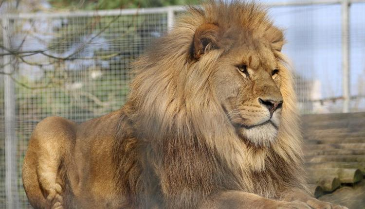

Newquay Zoo

Newquay Zoo
Newquay Zoo is set within 13 acres of lush tropical gardens just a short stroll from Newquay town centre.
During your visit you can get close to over 1,000 of the world’s rarest and endangered animals whilst also learning about the conservation work carried out by the zoo.
Watch the lions devour their lunch and then adventure into the Tropical House (if you're brave enough) and meet some of the more unusual residents including a sloth! If that isn’t enough, they have activity trails, face painting, a children’s play area, a Tarzan trail and Dragon maze to keep the little ones busy.
A comprehensive feed and talk programme runs throughout the day presented by the on-site education team and Animal Experiences offer visitors the opportunity to get even closer to some of the Zoo’s residents including the lemurs, penguins and meerkats (booking is advised).
On entry to the Zoo visitors are offered a 7-day pass included in the price of their ticket, which allows unlimited entries for 7 days- a great way to enjoy the zoo more than once during your stay in Newquay.
The Zoo also holds annual events throughout the year, please check their website for details.
Opening times and Prices
Opening times
Open from the 1st Jan until the 31st December apart from Christmas Day
Open from Monday to Sunday 10 - 5
Ticket Prices
Adults - £13.60
children (3 - 15) - £10.20
Concession - £11.55
Saver Ticket (2 Adults and 2 Children) - £42.60
Under 3's are free
Map